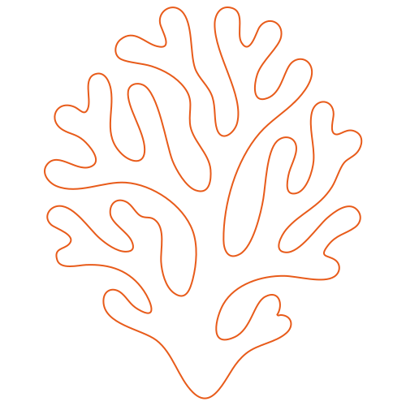
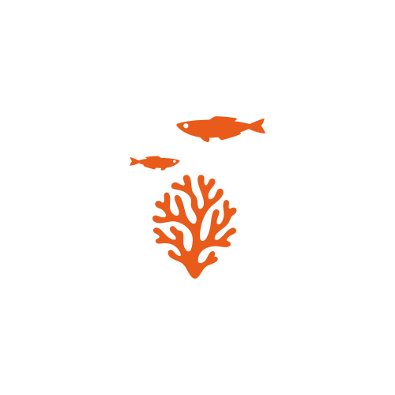
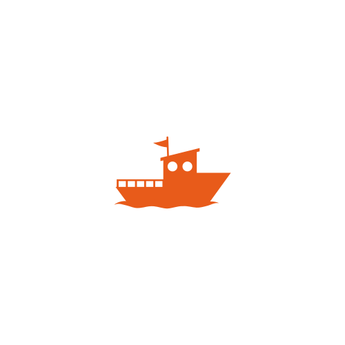

Vive una experiencia inolvidable ayudando a restaurar nuestros océanos.
¿Te unes?

No requiere buceo
Barco con A/CAprende y descubre los secretos del mar mientras siembras tu propio coral. Vive una experiencia única donde la aventura se une con la conservación: explora el océano, conoce su biodiversidad y deja tu huella positiva en el arrecife de Isla Tortuga.
¿El formulario no carga? Escríbenos a contacto@tortugacoralgarden.com y te ayudamos a reservar.

Últimas reviews

"Nunca imaginé que pudiera sembrar mi propio coral en el océano. Fue increíble aprender cómo funcionan los arrecifes y sentir que estaba haciendo algo real por el mar que tanto amo. Es una experiencia que te conecta con la naturaleza y con tu papel en cuidarla."

"Fue la primera vez que vi un coral de cerca y ¡me encantó! Me sentí como una exploradora, aprendí un montón sobre los peces, la vida marina y los problemas a los que se enfrentan nuestros Océanos."

"Siempre soñé con conocer la biodiversidad de Costa Rica, pero esta aventura superó todas mis expectativas. Sembrar un coral con mis propias manos me hizo sentir parte de algo más grande: la protección del océano. Es una experiencia transformadora que recomiendo a todo viajero que quiera dejar una huella positiva."
Puede participar en la actividad sin necesidad de bucear.
Puede hacer snorkel de manera opcional, o permanecer en la embarcación.
Los menores de 18 años siempre tienen que venir acompañados de un adulto. No hay edad máxima.
Claro. Puedes traer el equipo de foto o video que gustes.
En nuestro barco podrás encontrar almuerzo y snacks incluidos.